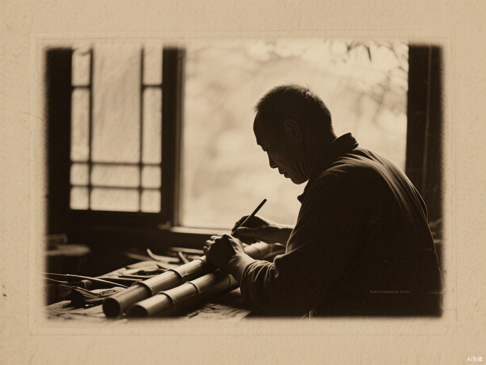
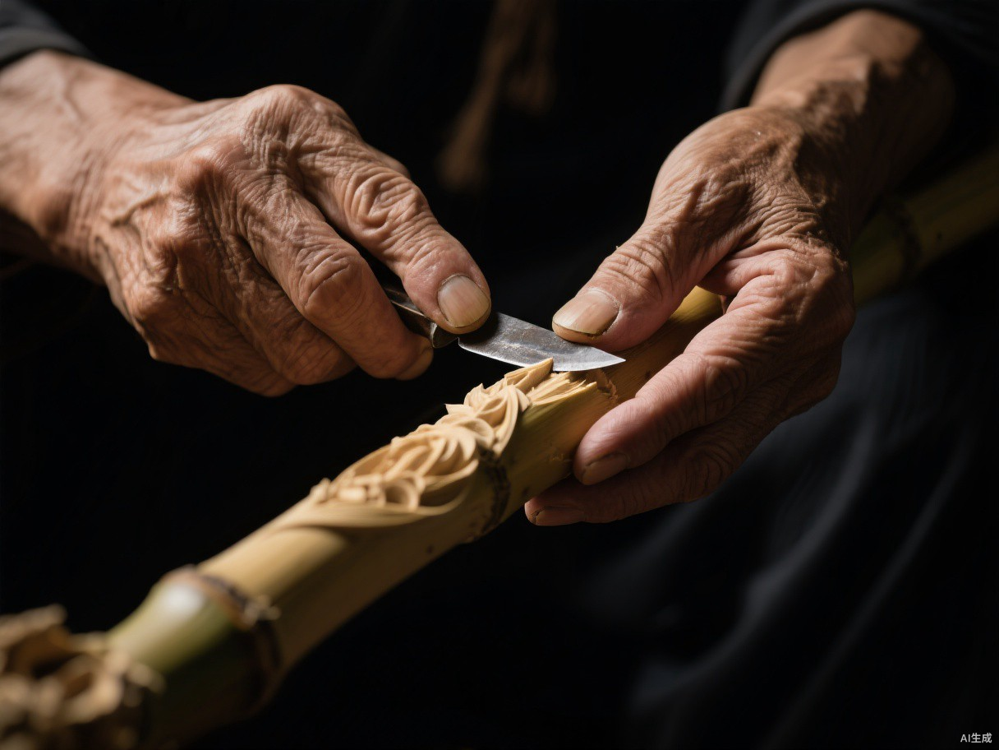
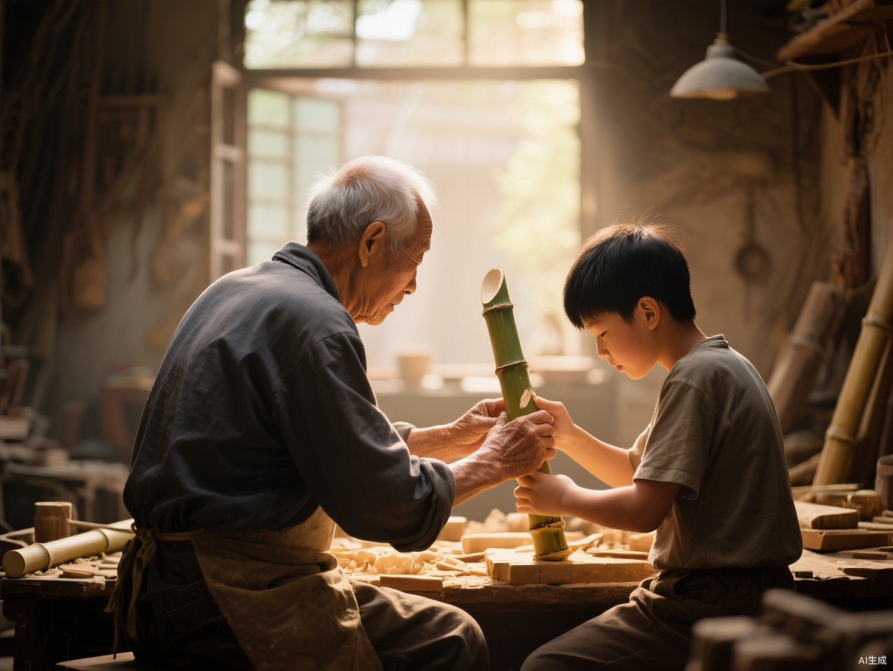

非 遗 传 承 与 创 新
PRESERVATION TODAY
入选第二批国家级非物质文化遗产名录
徐氏竹刻世家，家学相继、代有传人
非遗工坊、大师工作室与校园课堂并举
数字展馆、影像记录让技艺永续流传
STORIES OF THE MASTERS

博采书画名家之长融入竹刻，作品清雅秀润、自成一格，让常州留青从工艺走向艺术，奠定了当代留青竹刻的审美根基。

刀法精妙、题材广阔，山水花鸟人物无所不精，获评中国工艺美术大师。其刀下青筠层次分明，被誉为"留青刀笔第一人"。

徐素白之子，中国工艺美术大师、国家级非遗代表性传承人。承家学而开新境，携女儿及众徒传艺，让千年刀笔后继有人。
CHALLENGES & RENEWAL
DESIGN YOUR OWN · 选一种纹样，择一件载体，生成你的专属文创
DIGITAL COMMUNICATION
如本站一般，云端设馆，足不出户便可遍览千年竹韵。
短视频与纪录片让运刀之美被看见、被转发、被喜爱。
线上课程结合线下工坊，让青少年亲手触摸传统。
竹刻文创触网出海，老手艺成为新国潮。